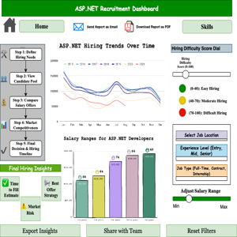
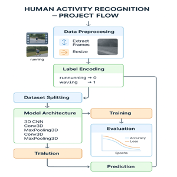

Detail-oriented Data Engineer with 5+ years of experience designing and building scalable data pipelines, data integration solutions, and backend systems across enterprise environments. Proficient in Python, SQL, Java, and ETL frameworks, with hands-on experience developing data processing workflows, optimizing large datasets, and supporting real-time and batch data pipelines. Skilled in data modeling, data transformation, and analytics integration using tools such as Tableau and Power BI to enable data-driven decision-making. Experienced in building reliable data infrastructure, improving data quality, and collaborating with cross-functional teams to deliver robust data solutions.
Developed and maintained data pipelines to analyze dining services data, enabling cost optimization and inventory planning. Processed and transformed datasets using SQL and Excel, generating usage reports and identifying consumption trends. Collaborated with cross-functional campus teams to improve data workflows and support data-driven decision-making.
Developed and optimized data processing modules using SQL Server and backend services to support enterprise data workflows.
Built ETL pipelines and automated data integration processes using Informatica to improve data availability and reporting.
Designed Tableau dashboards and data visualizations to deliver actionable insights for business teams. Created Python-based
automation tools to monitor data workflows and improve operational efficiency across banking, insurance, and healthcare systems.
Team Size: 20 | Project Budget: $100K/year
Developed and maintained data pipelines using SQL and Python to process and transform datasets for analytics.
Performed data cleaning and transformation to ensure reliable and high-quality data for reporting systems.
Supported business intelligence workflows by integrating data with Power BI and Tableau dashboards.
Collaborated with cross-functional teams to deliver scalable data solutions and meet project deadlines.
Team Size: 6
Planned and coordinated project activities to ensure timely delivery of data-related tasks aligned with project objectives. Collaborated with global teams to support data workflows and ensure effective communication across distributed environments. Contributed process improvements and automation ideas to enhance project efficiency and data management practices. Participated in project meetings to present insights and support cross-functional collaboration throughout the project lifecycle.. Team Size: 8
Focus on Data Analytics, Visualization, and SDLC. done two internships and few projects where i can gain more practical knowledge with teams. Created an ASP.NET dashboard in Power BI. Implemented DAX more and applied analytics to analyze the nulls from the data. In this project, I acted as project manager.

Built in Power BI using 7,000+ job listings, this dashboard delivers real-time insights into ASP.NET developer job demand, salary benchmarks, skill fit, and hiring efficiency. It supports both hiring managers and job seekers by offering intelligent filters, KPIs, and visuals. Key views include Hiring Risk, Salary Benchmarking, and Candidate-Job Fit. Job seekers can filter by remote availability, salary, and top skills; recruiters can optimize outreach. This project bridges applied analytics, visualization, and real-world decision support.
https://github.com/pallavichitti/aspnet_employability_dashboard
This 6-month individual project focused on classifying physical activities using data collected from wearable devices. Machine learning models were developed in Python to recognize activities like walking, sitting, and jogging. SPSS was used for statistical analysis of model performance and significance. The project achieved high accuracy and meaningful insights into activity classification. Research findings were published and presented at the EURECA 2021 International Conference.
https://github.com/Pallavi-2405/Human-Activity-Recognition